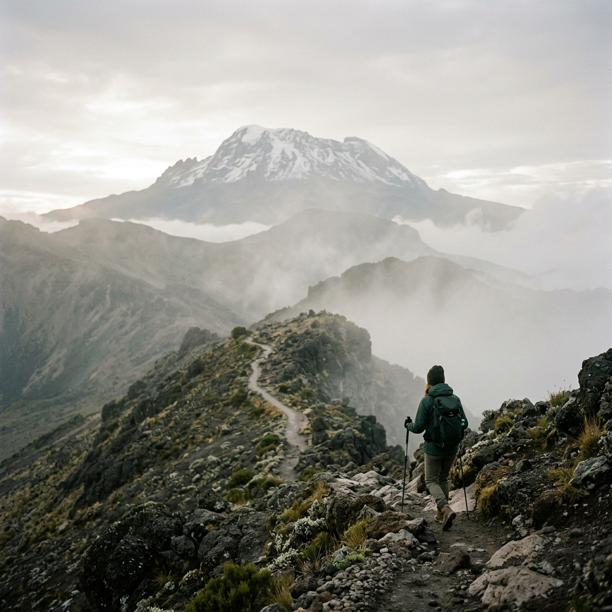

Our Community. Our Character. Our Future.
For Los Altos Hills City Council
I didn't come to public service because I wanted to become a politician. I came to serve because Los Altos Hills became home.
For 26 years, I have lived here, raised my family here, volunteered in our schools, participated in our community and served as a Fire Commissioner of Los Altos Hills.
My experience has taken me through public safety, education, psychology, small business, parenting, schools and community organizations. Each has taught me something different about leadership:
Our large lots give Los Altos Hills its extraordinary beauty, privacy and rural character. But our geography also means we have to work harder to stay connected.
Community doesn't happen automatically. It requires showing up. It means knowing our neighbors, participating in our schools and community, staying informed and taking part in the decisions that shape our town.
Our geography may separate our homes. It should never separate us from our community.
As a Fire Commissioner of Los Altos Hills, I have seen firsthand why decisions in a community like ours require careful consideration of emergency access, evacuation, terrain and infrastructure.
Beautiful surroundings come with responsibilities. Good planning means looking at the whole picture.
I believe we can meet our affordable housing responsibilities. But meeting a goal and deciding how best to achieve it are not the same thing.
Los Altos Hills has unique terrain, roads, infrastructure, environmental considerations and public-safety challenges. A solution designed broadly for California should not automatically be assumed to be the right solution for every community.
An involved community can bring local knowledge, professional expertise and practical alternatives to the table. We should engage constructively, understand the requirements, examine the feasibility and advocate for solutions that are both responsible and workable.
We can meet our responsibilities without abandoning common sense.

Summitting Mount Kilimanjaro taught me the true importance of a resilient mindset and the power of making progress step by step.
As a family woman deeply rooted in this town, I believe deeply in an Indigenous proverb:
“We do not inherit the Earth from our ancestors; we borrow it from our children.”
We are temporary custodians of a community that will belong to generations of residents long after we are gone. The people who live here decades from now will live with the consequences of the decisions we make today.
Our responsibility is to leave them a community that is safe, beautiful, connected and worthy of being called Los Altos Hills.
Our community is unique. Our geography is unique. Our challenges are unique. Our solutions should be thoughtful enough to recognize that.
Before making consequential decisions, we should ask:
Knowledge matters. But knowledge coupled with wisdom—and informed by an involved community—is what leads to better decisions.
I bring more than one professional background or one area of expertise. I bring 26 years of lived experience in Los Altos Hills and a record of service as:
I have spent decades learning this community—not simply observing it, but participating in it.
I am running because I believe Los Altos Hills deserves leadership that listens, asks difficult questions, respects local knowledge and thinks beyond the next election.
Ready to Serve.